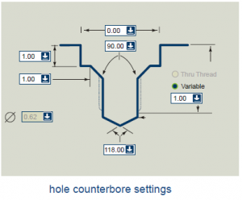
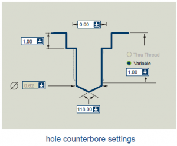
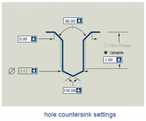

Here the project plan for the PartDesign as part of the Development roadmap.
This is a software development project aimed to implement a Part Design capabilities. Its about implementing some core features into the CAD modules of FreeCAD, Part, PartDesign and Assembly.
The development steps are planed here and tracked in the Issue tracking system to get a well formed change log: Issue tracker
Aim of the project is to enable FreeCAD accomplish a design task like the one at the right.
This will be achived by using the Sketcher and the PartDesign to design
special part and Part to load standard part as STEP (like the linear bearing).
The Assembly puts it all together with constrains.
Also an important outcome is the Feature editing methodology. Which gives the user an intuitive approach to instantiating and editing Features. This is importand for all other Modules and Workbenches to be come, to comply to a consistent user interface!
A parametric sketcher with a geometrical constraints solver, for more details see the Sketcher project.
Since a history based modeling can have a lot of steps leading to the final shape a bracket is needed. Thats the Body, which holds the final outcome of the modeling and acts as a group to all the features of the history tree.
A Pad feature extrude a Sketch (or any Part2DObject) in its normal direction. Always guaranty a solid, or fail.
Imprint a sketch in a base solid either defined by depth or "Up to last | Up to first". Also guaranty a solid.
Very good bore parameter definition from the NaroCad specification:
|  |  |  |
Replicate one of the above features
Replicate one of the above features along an x,y pattern
Replicate one of the above features along a pattern in polar coordinates
Replicate one of the above features according to a general rule provided in form of a script.
The Pattern feature class can be implemented as a tabular pattern and serve as a base class for the Rectangular, Circular and Scripted Pattern features. These derived classes will only have to fill in the repetitions table of the base class.
Each line of the repetitions table of the base Pattern class has to hold at least a transformation matrix to applied to the Placement of the original feature to be replicated. Additionally we could have optional transformation rules like for example manipulating some parameter value the feature to be replicated (e.g. in order to create a pattern of holes with varying radius).
This UML chart shows the planed object hierarchy and its relationships. Yellow is a abstract base class, blue implemented and grey is planed.
PartDesign Bearingholder Tutorial I
PartDesign Bearingholder Tutorial II
Next actions are defined in the Roadmap entry for PartDesign:
Since the parametric/associative nature of the PartDesign we need finally a "Body" which groups and organizes a construction history. The Body itself holds the end result as a shape and has grouped as children the PartDesign features. It also defines the actual head of the modeling history. Its also related to the Assembly project since its the building block for products and compounds.
The Pad and Pocket features are the first teaser for the PartDesign. There is still work to do especially the visibility control and the visual manipulators. But then additional features are needed.
Pattern feature which repeatingly apply a Pad or Pocket feature according to a circular or rectangular patter. An Example in IronCAD. Done [jrheinlaender]
Classical bore hole with all parameters for threading and counter bore....
Sweeps a Sketch along a curve and create a Solid.
Rotate a Sketch along one of its Axis and a certain angle. Done [jrheinlaender et al.]
{kind=link}
{kind=link}
{kind=link}
{kind=link}
{kind=link}
{kind=link}
{kind=link}